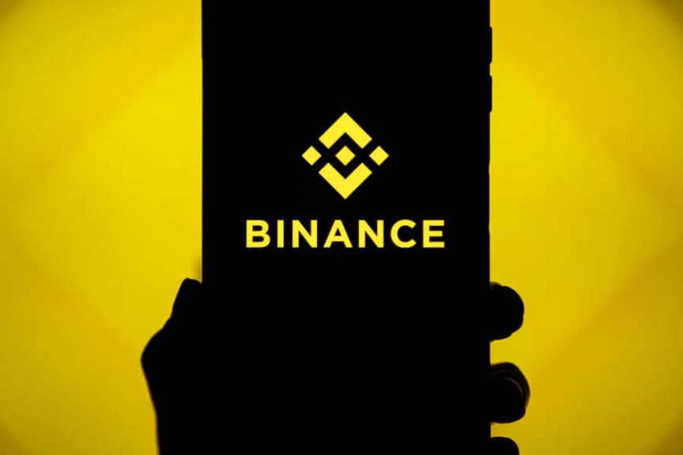
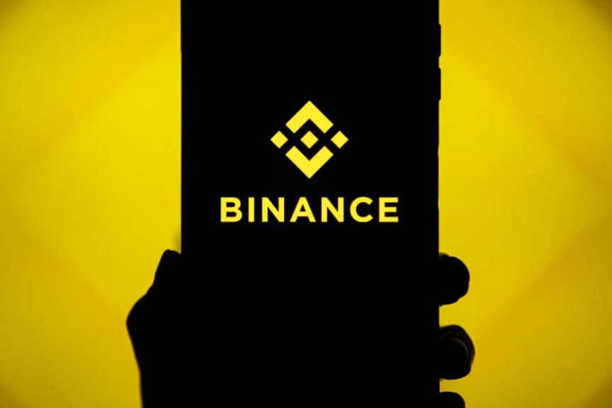

Binance Announces Law Enforcement Training Program
~2 min read | Published on 2022-10-03, tagged Binance, General-News using 406 words.
The cryptocurrency exchange Binance announced the launch of a law enforcement training program.
Binance, like most other cryptocurrency exchanges and blockchain analytics companies, employs former federal law enforcement officers. These former feds work closely with current feds in many ways, including information sharing and “training programs.”
The press release:
Over the past year, the Binance Investigations team has conducted and participated in more than 30 workshops on countering cyber and financial crime, engaging law enforcement officers in Argentina, Brazil, Canada, France, Germany, Israel, Netherlands, Philippines, Sweden, South Korea, and the UK, among others.
“As more regulators, public law enforcement agencies, and private sector stakeholders look closely at crypto, we are seeing an increased demand for training to help educate on and combat crypto crimes,” said Tigran Gambaryan, Global Head of Intelligence and Investigations at Binance. “To meet that demand, we have bolstered our team to conduct more training and work hand-in-hand with regulators across the globe.”

The training program is led by world-class practitioners from the Binance Investigations team, which employs security experts and former law enforcement agents, including analysts and operatives who had helped take down some of the world’s largest criminal platforms, such as Silk Road and Hydra.
The standard one-day training program includes in-person workshops on the fundamental concepts of blockchain and crypto assets, as well as insight into the evolving legal and regulatory environment they operate in. Binance’s anti-money laundering (AML) policies and the investigative methods developed by the company to detect and prevent criminal behavior are also discussed in detail.
As a result of deploying robust compliance and AML programs, Binance has recently secured approvals and registrations in France, Italy, and Spain, among others, making the exchange one of the few crypto companies to accomplish this within G7 countries.
“Protecting users is our number one priority at Binance. We work hand-in-hand with law enforcement to track and trace suspected accounts and fraudulent activities, contributing to the fight against terrorism financing, ransomware, human trafficking, child pornography, and financial crimes," said Gambaryan, a former special agent of the Internal Revenue Service—Criminal Investigation (IRS-CI) Cyber Crimes Unit.
Since November 2021, the Binance Investigations team has responded to more than 27,000 law enforcement requests with an average of three days response time, which is faster than any traditional financial institution. “Binance is known among law enforcement to have a fast response system, unmatched by any traditional financial institution,” said Gambaryan.
Amid Growing Demand, Binance Boosts its Global Law Enforcement Training Program | www.binance.com, archive.is, archive.org
Binance, like most other cryptocurrency exchanges and blockchain analytics companies, employs former federal law enforcement officers. These former feds work closely with current feds in many ways, including information sharing and “training programs.”
The press release:
Over the past year, the Binance Investigations team has conducted and participated in more than 30 workshops on countering cyber and financial crime, engaging law enforcement officers in Argentina, Brazil, Canada, France, Germany, Israel, Netherlands, Philippines, Sweden, South Korea, and the UK, among others.
“As more regulators, public law enforcement agencies, and private sector stakeholders look closely at crypto, we are seeing an increased demand for training to help educate on and combat crypto crimes,” said Tigran Gambaryan, Global Head of Intelligence and Investigations at Binance. “To meet that demand, we have bolstered our team to conduct more training and work hand-in-hand with regulators across the globe.”

Binance
The training program is led by world-class practitioners from the Binance Investigations team, which employs security experts and former law enforcement agents, including analysts and operatives who had helped take down some of the world’s largest criminal platforms, such as Silk Road and Hydra.
The standard one-day training program includes in-person workshops on the fundamental concepts of blockchain and crypto assets, as well as insight into the evolving legal and regulatory environment they operate in. Binance’s anti-money laundering (AML) policies and the investigative methods developed by the company to detect and prevent criminal behavior are also discussed in detail.
As a result of deploying robust compliance and AML programs, Binance has recently secured approvals and registrations in France, Italy, and Spain, among others, making the exchange one of the few crypto companies to accomplish this within G7 countries.
“Protecting users is our number one priority at Binance. We work hand-in-hand with law enforcement to track and trace suspected accounts and fraudulent activities, contributing to the fight against terrorism financing, ransomware, human trafficking, child pornography, and financial crimes," said Gambaryan, a former special agent of the Internal Revenue Service—Criminal Investigation (IRS-CI) Cyber Crimes Unit.
Since November 2021, the Binance Investigations team has responded to more than 27,000 law enforcement requests with an average of three days response time, which is faster than any traditional financial institution. “Binance is known among law enforcement to have a fast response system, unmatched by any traditional financial institution,” said Gambaryan.
Amid Growing Demand, Binance Boosts its Global Law Enforcement Training Program | www.binance.com, archive.is, archive.org